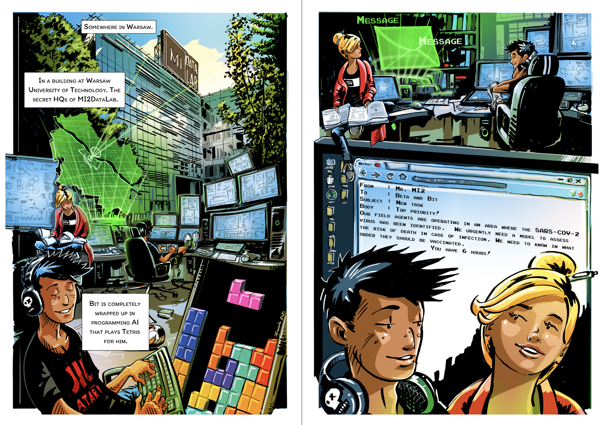
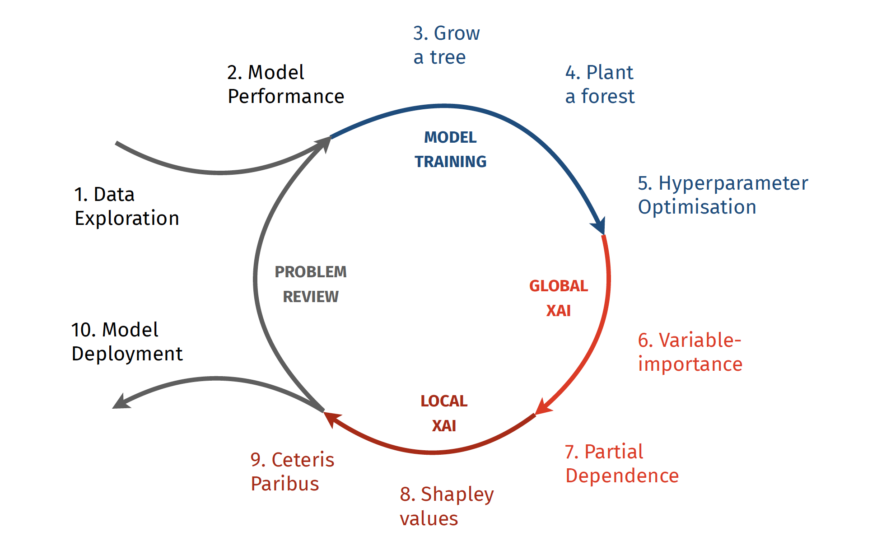

But what is it all about?

All right, but how should we build predictive models in a responsible way? This is a common question posed by data scientists across varying levels of experience. My reply usually boils down to a simple: test, test and test them all over again.
In this short book, I delve into the process of developing and testing predictive models with a strong focus on conducting detailed and versatile model exploration. The core of this approach utilizes state of the art eXplainable Artificial Intelligence (XAI) methods to gain a deeper understanding of the model behaviour, evaluating model stability and consistency with domain knowledge.
This book consists of 10 parts, guiding readers through a step-by-step journey of creating and testing predictive models. The figure below illustrates how the subsequent parts map to the model development process, capturing our progression from reading the data, through training multiple models, and reaching an explanatory model analysis to extract patterns learned by each model. Recognizing that building such models is an iterative process, we explore one complete iteration within forthcoming pages.

In the coming pages you will find both presentation of selected modern machine learning techniques and the intuition behind them. The theory is supplemented by code snippets with examples in Python and R. In addition the process of modelling the data is shown through a comic book describing the adventures of two characters, Beta and Bit. The conversation between these two shows the thought process that analysts often face, whether to try a different model, try another technique for data exploration or look for other data.
Model development is a challenging task but also an exciting adventure. Sometimes textbooks focus only on the technical side, losing all the fun. Here we are going to have it all.